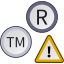

File:No Facebook.svg
Jump to navigation
Jump to search
Size of this PNG preview of this SVG file: 64 × 14 pixels. Other resolutions: 320 × 70 pixels | 640 × 140 pixels | 1,024 × 224 pixels | 1,280 × 280 pixels | 2,560 × 560 pixels.
{kind=link}
{kind=link}
{kind=link}
{kind=link}
{kind=link}
{kind=link}
Original file (SVG file, nominally 64 × 14 pixels, file size: 3 KB)
{kind=link}
Captions
Captions
Add a one-line explanation of what this file represents
Summary[edit]
{kind=link}
| Description |
English: The Facebook logo with a diagonal red slash across it, indicating "no Facebook." Français : Le logo Facebook avec une barre oblique rouge en diagonale, indiquant "pas de Facebook". Bahasa Indonesia: Logo Facebook dengan garis miring merah diagonal di atasnya yang menandakan "tidak/bukan Facebook". |
| Date | (UTC) |
| Source |
Own work based on: Facebook Logo (2019).svg: |
| Author |
|
| Other versions | NO Facebook.png: |
Licensing[edit]
{kind=link}
This logo image consists only of simple geometric shapes or text. It does not meet the threshold of originality needed for copyright protection, and is therefore in the public domain. Although it is free of copyright restrictions, this image may still be subject to other restrictions. See WP:PD § Fonts and typefaces or Template talk:PD-textlogo for more information.
|
- "Facebook" and its logo and design
|  | This work includes material that may be protected as a trademark in some jurisdictions. If you want to use it, you have to ensure that you have the legal right to do so and that you do not infringe any trademark rights. See our general disclaimer. This tag does not indicate the copyright status of the attached work. A normal copyright tag is still required. See Commons:Licensing. |
File history
Click on a date/time to view the file as it appeared at that time.
| Date/Time | Thumbnail | Dimensions | User | Comment | |
|---|---|---|---|---|---|
| current | 09:18, 18 October 2021 | 64 × 14 (3 KB) | Sette-quattro (talk | contribs) | ticker line | |
| 09:10, 18 October 2021 | 64 × 14 (3 KB) | Sette-quattro (talk | contribs) | updated with latest version of the logo | ||
| 13:01, 23 July 2021 | 512 × 192 (6 KB) | Computermusic1999 (talk | contribs) | Reverted to version as of 07:56, 9 November 2020 (UTC) | ||
| 08:22, 26 May 2021 | 266 × 100 (5 KB) | Assalam 0202 (talk | contribs) | Reverted to version as of 05:10, 31 May 2010 (UTC) | ||
| 07:56, 9 November 2020 | 512 × 192 (6 KB) | Sette-quattro (talk | contribs) | updated logo to the latest version as requested in the graphic lab (https://commons.wikimedia.org/wiki/Commons:Graphic_Lab/Illustration_workshop#New_No_Facebook_SVG) | ||
| 05:10, 31 May 2010 | 266 × 100 (5 KB) | Kimkha (talk | contribs) | {{Information |Description=Facebook logo |Source=*File:Facebook.svg |Date=2010-05-31 05:10 (UTC) |Author=*File:Facebook.svg: Facebook *derivative work: ~~~ |Permission=see below |other_versions= }} {{Retouche |
{kind=link}
{kind=link}
{kind=link}
{kind=link}
{kind=link}
You cannot overwrite this file.
File usage on Commons
More than 100 pages use this file. The following list shows the first 100 pages that use this file only. A full list is available.
- User:Lourdes Cardenal
- File:04-09-12-Schaupflügen-Fahrenwalde-RalfR-IMG 1232.jpg
- File:Acueducto3 Lou.jpg
- File:Arrosticini 01.jpg
- File:Arrosticini 02.jpg
- File:Arrosticini 03.jpg
- File:Balksee-2005 by-RaBoe 01.jpg
- File:Balksee 01.jpg
- File:Brandenburger-tor-berlin.jpg
- File:Bruschetta 01 oel.jpg
- File:Bruschetta 02 schinken.jpg
- File:Buelkau -Dorfstrasse Richtung Norderende- 2005 by-RaBoe001.jpg
- File:Buelkau -Hadelner Kanal- 2005 by-RaBoe.jpg
- File:Buelkau -St. Johannes der Täufer- 2001 by-RaBoe.jpg
- File:Buelkau aue.jpg
- File:Buelkau buegerhus.JPG
- File:Buelkau dorf norderende.JPG
- File:Buelkau grabstein.jpg
- File:Buelkau hadler kanal.jpg
- File:Buelkau kirchenfenster.jpg
- File:Buelkau neuhaus kanal.jpg
- File:Buelkau taufbecken.jpg
- File:Bülkau -St. Johannes der Täufer - Kirchenaltar- 2005 by-RaBoe.jpg
- File:Chieti-San Domenico- 2002-by-RaBoe-02.jpg
- File:Chieti-San Francesco- 2004-by-RaBoe--003.jpg
- File:Chieti 2004 -Cattedrale di San Giustino- by-RaBoe 01.jpg
- File:Chieti 2005 by-RaBoe 001.jpg
- File:Chieti strasse 01.jpg
- File:Cockfight1.jpg
- File:Cockfight2.jpg
- File:Coloniahochhaus.jpg
- File:Cuxhaven Gedenkstaette Mineraumer by RaBoe 1999.jpg
- File:Cuxhaven fischerreihafen.jpg
- File:Dead tree river.jpg
- File:Eberswalde-markt-panorama.jpg
- File:Gran Sasso 01.jpg
- File:Gran Sasso 02.jpg
- File:Gran Sasso 03.jpg
- File:Gran Sasso 04.jpg
- File:Gran Sasso 05.jpg
- File:Market scene in Cuenca.JPG
- File:Montepulciano d Abruzzo bruschetta.jpg
- File:Moscufo -Santa Maria del Lago- 2004 by-RaBoe 01.jpg
- File:Moscufo 2004 by-RaBoe-00.jpg
- File:Moscufo 2004 by-RaBoe-01.jpg
- File:Moscufo Santa Maria del Lago 02.jpg
- File:Moscufo Santa Maria del Lago 03.jpg
- File:Moscufo Santa Maria del Lago 04.jpg
- File:Moscufo Santa Maria del Lago 05.jpg
- File:Moscufo Santa Maria del Lago 06.jpg
- File:Moscufo Santa Maria del Lago 07.jpg
- File:Neuhaus jacht hafen.jpg
- File:Osterbruch 2003 -Galerie Holländermühle Schweinskopf- by-RaBoe 01.jpg
- File:Osterbruch 2005 -Galerie Holländermühle Schweinskopf- by-RaBoe 01.jpg
- File:Osterbruch 2005 -St.-Petri-Kirche- by RaBoe 001.jpg
- File:Osterbruch kirche 02.jpg
- File:Otterndorf barock haus.jpg
- File:Otterndorf voss.jpg
- File:Peitz Teichland 2004 by-RaBoe 01.jpg
- File:Peitz Teichland 2004 by-RaBoe 02.jpg
- File:Peitz kraftwerk jaenschwalde sommer.jpg
- File:Peitz kraftwerk jaenschwalde sommer nah.jpg
- File:Peitz kraftwerk jaenschwalde tuerme.jpg
- File:Peitz kraftwerk jaenschwalde winter.jpg
- File:Pescara -Cattedrale di San Cetteo- 2005 by-RaBoe 001.jpg
- File:Pescara -Cattedrale di San Cetteo- 2005 by-RaBoe 002.jpg
- File:Pescara -Centro Storico- 2005 by-RaBoe 001.jpg
- File:Pescara -la bella addormentata- Porto Turistico 2004 by-RaBoe.jpg
- File:Pescara 2002 Chiesa del Sacro Cuore by-RaBoe.jpg
- File:Pescara 2005 -La Pineta Dannunzieana- by-RaBoe-001.jpg
- File:Pescara 2005 -Stazione Centrale- by-RaBoe 001.jpg
- File:Pescara 2005 -la pineta dannunziana- by Raboe 001.jpg
- File:Pescara 2007 -Casa natale di Gabriele D'Annunzio- by-RaBoe 01.jpg
- File:Pescara 2007 -Casa natale di Gabriele D'Annunzio- by-RaBoe 02.jpg
- File:Pescara 2007 -Casa natale di Gabriele D'Annunzio- by-RaBoe 04.jpg
- File:Pescara Porto 2002 by-RaBoe 01.jpg
- File:Pescara Porto 2004 by-RaBoe.jpg
- File:Pescara Town Hall - Harbour 2004 by-RaBoe.jpg
- File:Pescara aeroporto.jpg
- File:Pescara galere.jpg
- File:Pescara kirche 02.jpg
- File:Pescara panorama klein.JPG
- File:Pescara panorama mittel.JPG
- File:Pescara quelle 04.jpg
- File:Pescara quelle 05.jpg
- File:Rgmuseum.jpg
- File:Rhodotypos-scandens.JPG
- File:Schael.jpg
- File:Smrk.jpg
- File:St Martin Nohn Eifel.jpg
- File:St Martin Nohn Eifel1.jpg
- File:Street in quito-ecuador.JPG
- File:Suricata suricatta1.JPG
- File:Suricata suricatta2.JPG
- File:Tuennes.jpg
- File:WJT 045.jpg
- File:WJT 072.jpg
- File:WJT 078.jpg
- File:WJT 080.jpg
- File:WJT 092.jpg
View more links to this file.
File usage on other wikis
The following other wikis use this file:
- Usage on ar.wikipedia.org
- Usage on bn.wikipedia.org
- Usage on ca.wikibooks.org
- Usage on cs.wikipedia.org
- Usage on de.wikipedia.org
- Benutzer:Sozi
- Benutzer:Michaël
- Benutzerin:Ra'ike
- Benutzer:Sebbelbabba
- Benutzer:Karl-Heinz Jansen
- Benutzer:Wahldresdner
- Benutzer:RedPiranha
- Benutzer:Sokai
- Benutzer:HH58
- Benutzer:J. Lunau
- Benutzer:Stane~dewiki
- Benutzer:Bergfalke2
- Benutzer:Fährtenleser
- Benutzer:Bernhard Beier
- Benutzer:Drucker03
- Benutzer:PerfektesChaos
- Benutzer:BartB
- Benutzer:Dreizung
- Benutzer:S. F. B. Morse
- Benutzer:Zone42
- Benutzer:Wivoelke
- Benutzer:Kpisimon
- Benutzer:Tilman2007
- Benutzer:N8eule78
- Benutzer:Hans Eo
- Benutzer:Jamiri
- Benutzer:Tlustulimu
- Benutzer:Tlustulimu/Babel
- Benutzer:S. F. B. Morse/Löschkönig
- Benutzer:HeinrichStuerzl
- Benutzer:Georgenhausen
- Benutzer:Alazon
- Benutzer:Bogorm
- Benutzer:Bertbau
- Benutzer:Remirus
- Benutzer:MAyo
- Benutzer:HubPfalz
- Benutzer:Uwebart
- Benutzer:KasparSturm
- Benutzer:JeDi TS
View more global usage of this file.
{kind=link}